This project explores Neural Radiance Fields (NeRF), a cutting-edge technique for 3D scene reconstruction
and novel view synthesis. NeRF represents a scene as a continuous volumetric function that maps 3D coordinates
and viewing directions to color and density values. By optimizing this neural representation from a collection
of 2D images, we can synthesize photorealistic novel views of complex scenes with unprecedented quality.
Part 0: Camera Calibration and 3D Scanning
The first step in building a NeRF is understanding the camera geometry and visualizing the camera frustums
in 3D space. Camera calibration allows us to determine the intrinsic and extrinsic parameters of each camera,
which are essential for accurately reconstructing 3D scenes from 2D images. Using Viser, we can visualize
the camera frustums to understand the spatial arrangement of our capture setup.
Camera Frustum Visualization
Below are screenshots of the camera frustums visualized in Viser. These visualizations show the geometric
relationship between different camera viewpoints in 3D space. Each frustum represents the field of view
of a camera, helping us understand the coverage and overlap between different camera positions.
In order to get the best results, I made sure to capture a lot of object from different angles and distances.
After taking these multiple images, I used my calibration code which detects Aruco markers in the images in order
to calculate the camera parameters. Then after retrieving the K matrix and the distortion coefficients, I then estimated
the poses of the cameras by using the K and distortion coefficients from the previous step and used solvePnP to estimate
the camera poses. Finally, I used the starter code given to undistort the images and crop out the minimal black
borders from the images. Then I also used the starter code to save the images, K matrices, and poses in order to
use them in the next part of the project.
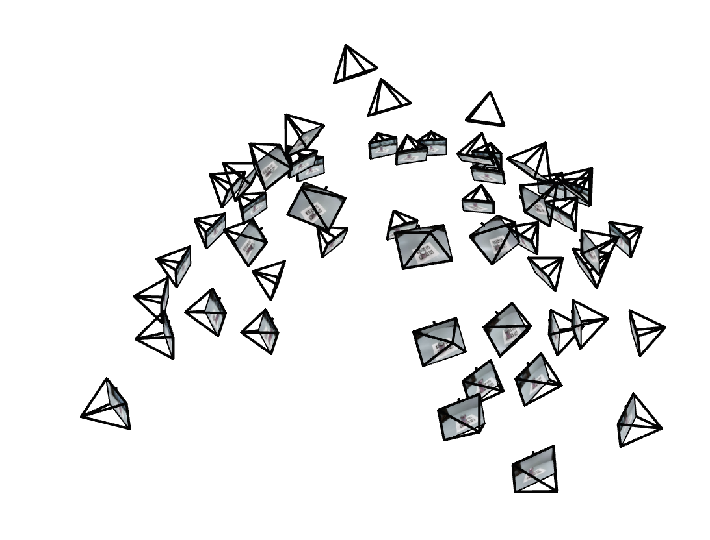
Camera Frustum Visualization - View 1
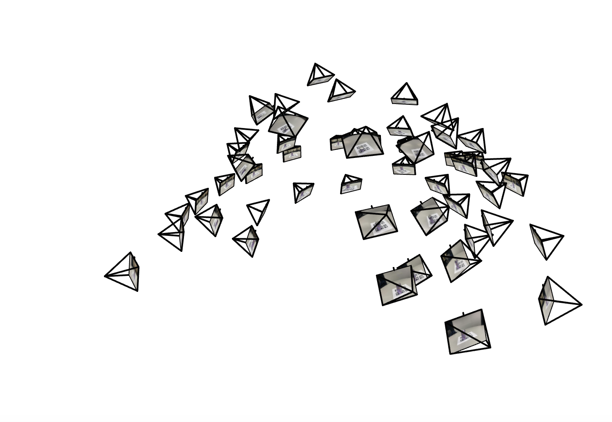
Camera Frustum Visualization - View 2
Before working with 3D Neural Radiance Fields, we start with a simpler 2D case. Here, we create a neural field
that represents a 2D image by learning a mapping from pixel coordinates (x, y) to RGB color values. This involves
training a Multi-Layer Perceptron (MLP) with sinusoidal positional encoding to capture high-frequency details in the image.
Model Architecture
2D Neural Field Architecture
Neural network mapping 2D coordinates to RGB colors
Network Configuration:
Input: 2D pixel coordinates (x, y) with sinusoidal positional encoding
Positional Encoding: Various max frequencies (L) tested: L=2, L=5, L=10
MLP Structure: Multiple fully connected layers with ReLU activations
Width: Various widths tested: 128 and 256 hidden units per layer
Output: 3D RGB color values with Sigmoid activation to constrain to [0,1]
Optimizer: Adam with learning rate = 1e-2
Loss Function: Mean Squared Error (MSE)
Training: Up to 2000 iterations with batch size of 10,000 pixels
Training Progression: Width=256, L=10
Below shows how the neural field progressively learns to represent the test image over training iterations.
The network starts with a blurry approximation and gradually captures finer details. It appears that the best
configuration for this network is a width of 256 and a max frequency of 5.
Comparing different max frequencies for positional encoding and network widths. This 2×2 grid shows final results
for different hyperparameter combinations:
Width=128, L=5
Final result after 1000 iterationsWidth=256, L=5
Final result after 2000 iterations
Width=128, L=10
Final result after 1000 iterationsWidth=256, L=10
Final result after 2000 iterations
PSNR Training Curves - All Configurations
Peak Signal-to-Noise Ratio (PSNR) measures reconstruction quality. Higher PSNR indicates better image quality.
The curves show how image quality improves during training for different configurations.
Mean Squared Error (MSE) loss curves showing the optimization progress. Lower MSE indicates better fit to the target image.
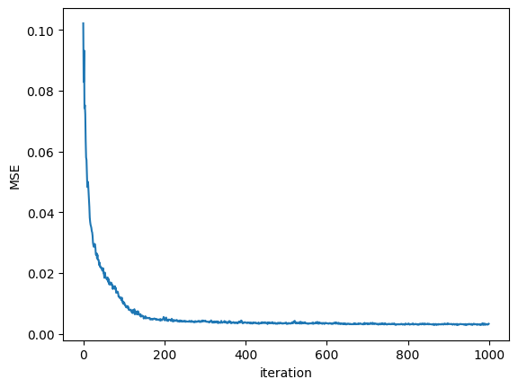
MSE Loss Curve
Width=128, L=5
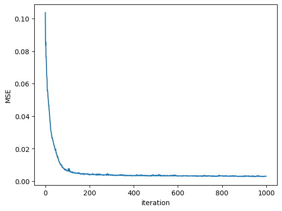
MSE Loss Curve
Width=128, L=10
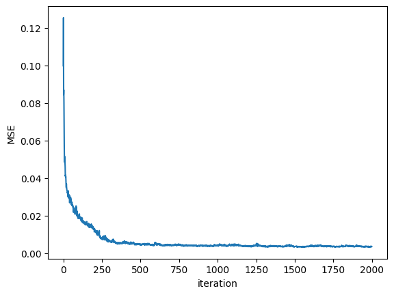
MSE Loss Curve
Width=256, L=2
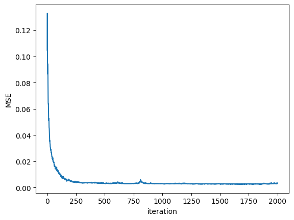
MSE Loss Curve
Width=256, L=5
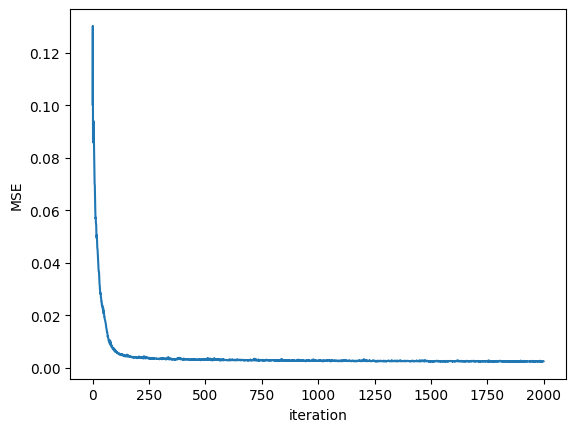
MSE Loss Curve
Width=256, L=10
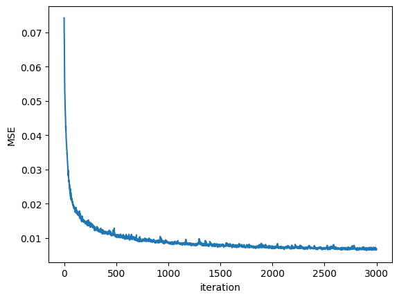
MSE Loss Curve
Custom Image
Part 2: Fit a Neural Radiance Field from Multi-view Images
Now we extend the neural field approach to 3D by implementing a full Neural Radiance Field (NeRF). Instead of
mapping 2D coordinates to colors, we now map 3D spatial coordinates and viewing directions to RGB colors and
volume density. By training on multiple calibrated views of a scene, the NeRF learns a 3D representation that
can render photorealistic novel views.
Implementation Overview
3D Neural Radiance Field Architecture
MLP network mapping 3D positions and view directions to color and density
Key Components Implemented:
Camera-to-World Transformation: Converting points between camera and world coordinate systems
Pixel-to-Ray Conversion: Generating rays from camera pixels using intrinsic and extrinsic parameters
Ray Sampling: Uniformly sampling points along rays with random perturbation during training
NeRF Network: MLP that takes 3D position (with L=10 PE) and view direction (with L=4 PE) as input, outputs RGB + density
Volume Rendering: Compositing colors and densities along rays to produce final pixel colors
2.1: Coordinate Systems and Ray Generation
Camera to World Coordinate Transformation
In 3D computer vision, we need to transform points between different coordinate systems. The relationship between
world coordinates \(\mathbf{x}_w\) and camera coordinates \(\mathbf{x}_c\) is defined by a rotation matrix \(\mathbf{R}\)
and a translation vector \(\mathbf{t}\):
The matrix
\(\begin{bmatrix} \mathbf{R} & \mathbf{t} \\ \mathbf{0}^\top & 1 \end{bmatrix}\)
is called the world-to-camera (w2c) transformation matrix, or extrinsic matrix. Its inverse is the
camera-to-world (c2w) transformation matrix.
Implementation:
We implement a function x_w = transform(c2w, x_c) that transforms a point from camera space to world space.
The implementation supports batched coordinates for efficient processing of multiple points simultaneously.
Correctness can be verified by checking that x == transform(c2w.inv(), transform(c2w, x))
always holds true for any point x.
Pixel to Camera Coordinate Conversion
For a pinhole camera model with focal length \(f\) and principal point \((c_x, c_y)\), the intrinsic matrix
\(\mathbf{K}\) is defined as:
This matrix projects a 3D point \(\mathbf{x}_c = (x, y, z)^\top\) in camera coordinates to a 2D pixel location
\(\mathbf{u} = (u, v)^\top\) through the perspective projection:
\[
s \begin{bmatrix} u \\ v \\ 1 \end{bmatrix} =
\mathbf{K} \begin{bmatrix} x \\ y \\ z \end{bmatrix}
\]
where \(s = z\) is the depth of the point along the optical axis (the z-axis in camera coordinates).
Implementation:
We implement the inverse operation x_c = pixel_to_camera(K, uv, s) that transforms a 2D pixel coordinate
back to 3D camera coordinates given a depth of \(s\). The function applies the inverse of the intrinsic matrix
and scales by the depth to recover the 3D position. Like the previous function, this implementation supports batched
coordinates for efficient processing of multiple pixels.
Pixel to Ray Conversion
A ray is defined by an origin vector \(\mathbf{r}_o\) and a direction vector \(\mathbf{r}_d\). For a pinhole camera,
we compute the ray origin \(\mathbf{r}_o\) and direction \(\mathbf{r}_d\) for each pixel \((u, v)\).
The ray origin is simply the camera center in world coordinates. For a camera-to-world transformation matrix
\(\mathbf{T} = \begin{bmatrix} \mathbf{R} & \mathbf{t} \\ \mathbf{0}^\top & 1 \end{bmatrix}\),
the camera origin is the translation component:
\[
\mathbf{r}_o = \mathbf{t}
\]
To compute the ray direction for pixel \((u, v)\), we select a point along the ray with unit depth (\(s = 1\))
and find its world coordinates \(\mathbf{x}_w\) using the previously implemented transformation functions.
The normalized ray direction is then:
We implement ray_o, ray_d = pixel_to_ray(K, c2w, uv) that converts pixel coordinates to rays with
origin and normalized direction. This function leverages the previously implemented pixel_to_camera
and transform functions. The implementation supports batched processing to efficiently generate rays
for multiple pixels simultaneously, which is essential for NeRF training where we process thousands of rays per iteration.
2.2: Ray and Point Sampling
Sampling Rays from Images:
To efficiently train the NeRF, we need to sample rays from multiple images. First, we generate a UV coordinate grid
for all pixels across all training images. An important detail is adding 0.5 to account for pixel center offsets,
since image coordinates are defined at integer locations but we sample from pixel centers.
We then use the pixel_to_ray function to convert all UV coordinates into ray origins and directions.
To sample \(N\) rays per training iteration, we flatten all pixels from all images into a single pool and randomly
select \(N\) indices. This global sampling approach ensures all pixels are treated equally regardless of source image.
Sampling Points along Rays:
For each ray, we discretize it into sample points by uniformly spacing \(n_{\text{samples}}\) points between near and
far bounds. For the Lego dataset, we use \(t_{\text{near}} = 2.0\), \(t_{\text{far}} = 6.0\), and \(n_{\text{samples}} = 64\).
At inference time, we disable perturbation for consistent results. The implementation uses PyTorch's broadcasting
to efficiently compute sample points for batches of rays simultaneously.
2.3: Putting the Dataloading All Together
We implement a RaysData PyTorch Dataset class that encapsulates the entire dataloading pipeline.
During initialization, the dataset takes images, intrinsic matrix \(K\), and camera-to-world matrices \(c2w\)
as input. It generates a UV coordinate grid for all pixels across all images using torch.meshgrid,
then converts these to ray origins and directions using our pixel_to_ray function. All data
(rays, pixels, and UV coordinates) are flattened into 1D arrays of shape (B×H×W, C) to create
a unified pool of samples. The sample_rays(num_rays) method randomly samples indices from this
pool and returns the corresponding ray origins, directions, and ground truth pixel colors. This design enables
efficient random sampling across all training images during NeRF optimization. We text the random rays and point
sample in the visualization below of the lego scene below.
Lego Scene Visualization - Multiple Angles
Different viewpoints of the lego bulldozer scene showing the spatial arrangement and structure, showing that our
ray generation and sampling implementation was indeed correct:
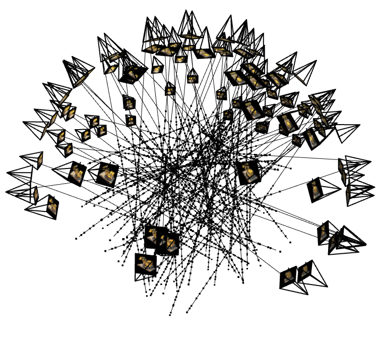
Angle 1
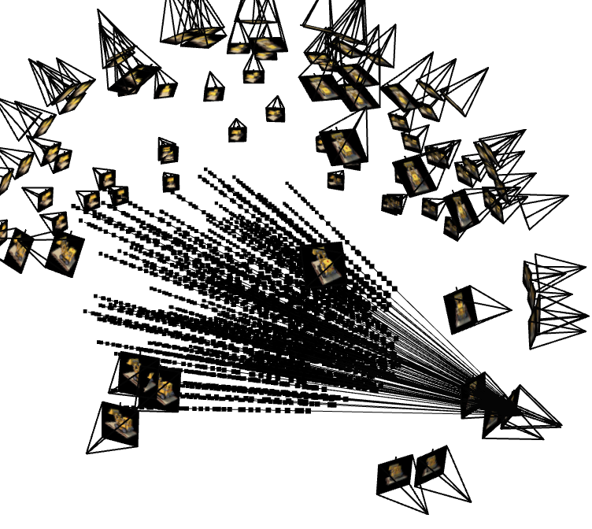
Angle 2
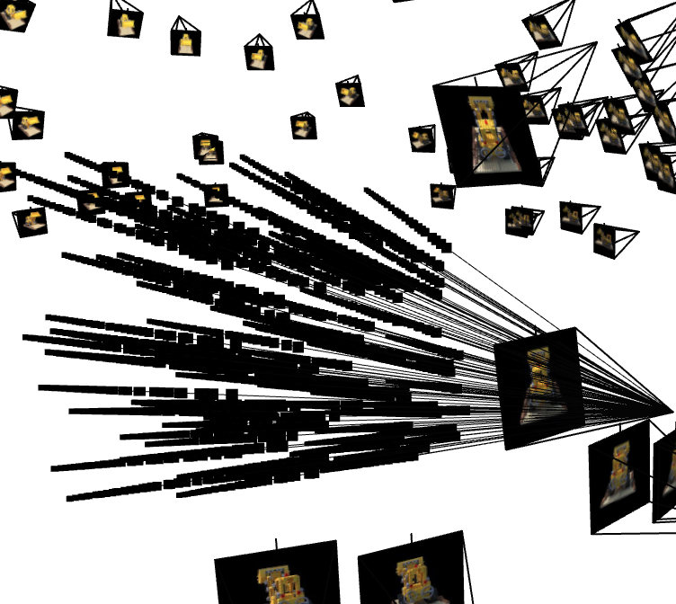
Angle 3
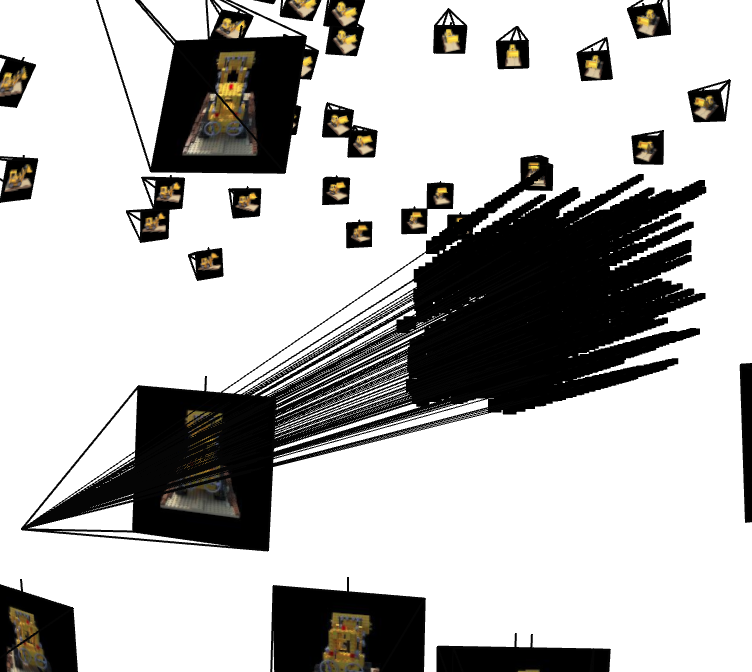
Angle 4
Part 2.4: Training on Lego Dataset
Training a NeRF on the Lego bulldozer scene (100 training images, 200×200 resolution). The model learns to
synthesize novel views by optimizing the neural representation to match the training images.
Training Configuration:
Batch Size: 10,000 rays per iteration
Optimizer: Adam with learning rate = 5e-4
Samples per Ray: 64 points
Near/Far Bounds: 2.0 / 6.0
Training Iterations: 2000 steps
Final PSNR: >23 dB on validation set
Overall, training on the lego dataset was quite successful. The model was able to learn the 3D structure and
appearance of the lego bulldozer in a relatively low number of iteration while achieving a high PSNR. Implementing
the training loop itself was quite simple. By repurposing the code from Part 1, I iteratively trained the NeRF model
on a bunch of random points, sampled from random rays, and passed the outputs through the volrend function (to be
discussed in the next section). Finally, I calculated the loss using the ground truth pixel colors and the predicted pixel
colors. I also made sure to sporadically check my validation loss as well to guard against potential overfitting.
2.5: Volume Rendering
Volume rendering is quite critical to the training process as it allows us to meaningfully interpret the outputs of the
NeRF model and also allows us to generate novel views of the scene. The volume rendering equation integrates color and
density along rays to produce the final pixel colors.
Volume Rendering Equation
For each ray, we have \(N\) sampled points with colors \(\mathbf{c}_i\) and densities \(\sigma_i\). The rendered color
\(\hat{C}\) is computed using the following discrete approximation of the volume rendering integral:
where \(\delta = \frac{t_{\text{far}} - t_{\text{near}}}{N}\) is the step size between samples, and \(T_i\) is the
accumulated transmittance representing the probability that the ray travels from the camera to point \(i\) without hitting
any particles:
The volume rendering function takes three inputs: the densities (sigmas) at each sample point along the rays, the RGB colors
at each sample point, and the step size between consecutive samples. The implementation follows a four-step process to efficiently
compute the final rendered colors in parallel across all rays.
First, we compute the cumulative density along each ray by multiplying each density value by the step size and then performing
a cumulative sum along the sampling dimension. This gives us the total accumulated density from the ray origin up to and including
each sample point. Next, to calculate the transmittance at each point, we take the cumulative density and subtract the current
sample's contribution (sigma times step size), effectively giving us the accumulated density up to but not including the current
point. We then apply the exponential of the negative of this value, which represents the probability that light traveling along
the ray reaches this point without being absorbed.
The third step computes the alpha compositing term by calculating one minus the exponential of negative sigma times step size.
This term represents the opacity or stopping probability at each sample point—how much the ray is blocked or absorbed at that
location. Finally, we multiply the transmittance, the alpha term, and the RGB colors together element-wise for each sample point,
then sum across all samples along each ray. This weighted sum produces the final rendered color for each pixel, where samples
closer to the camera with high density have more influence, while samples behind opaque surfaces contribute little due to low
transmittance.
This formulation allows the NeRF to learn both geometry (through density \(\sigma\)) and appearance (through color \(\mathbf{c}\)).
High density values block the ray and prevent deeper points from contributing, while low density allows the ray to pass through.
During training, the network learns to place high densities at object surfaces and low densities in empty space, naturally
reconstructing the 3D geometry from 2D observations.
Lego Training Progression
Now that we have the necessary parts the train and visualize the code, we are ready to train our 3d NeRF model on the lego bulldozer dataset!
Watch how the NeRF gradually learns the 3D structure and appearance of the lego bulldozer:
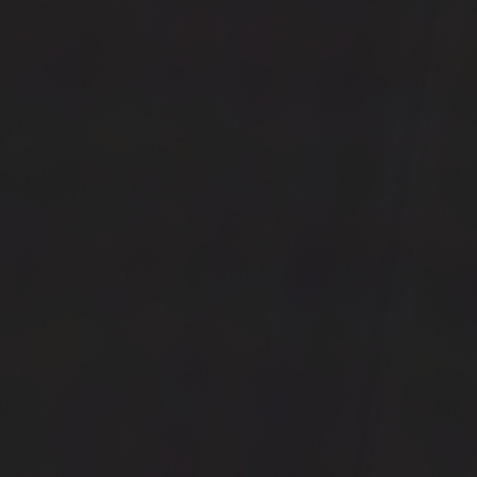
Iteration 1
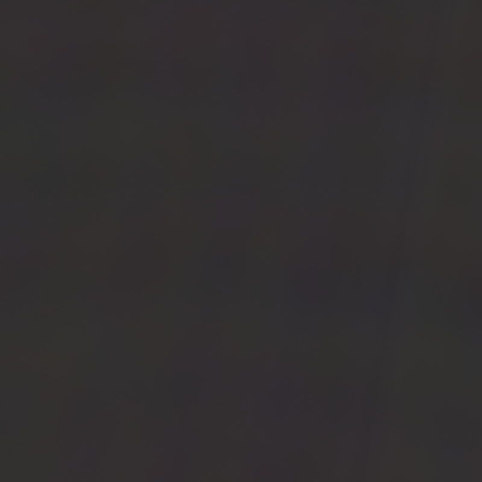
Iteration 3
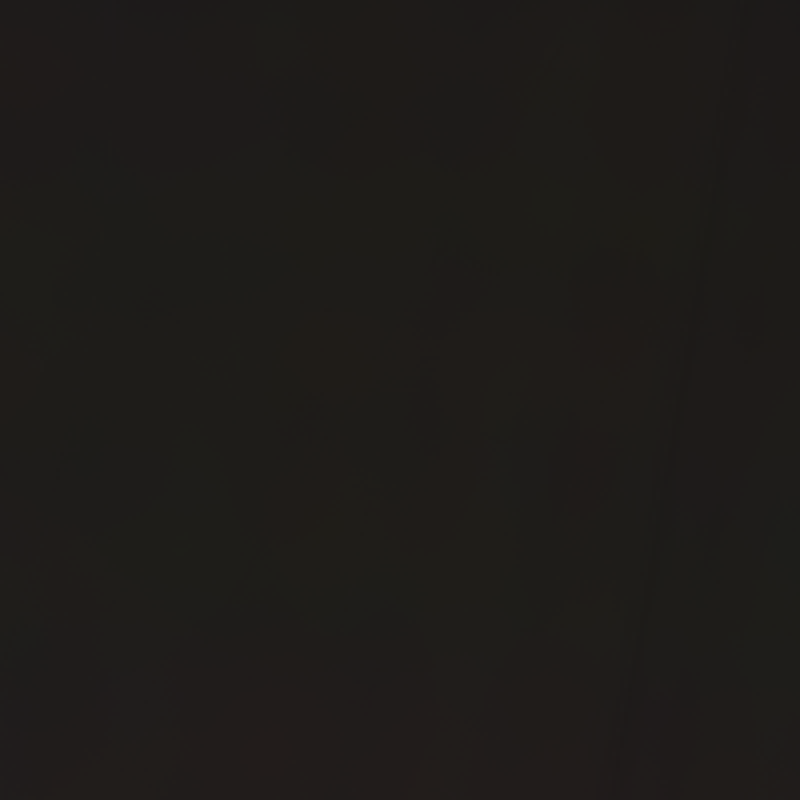
Iteration 10
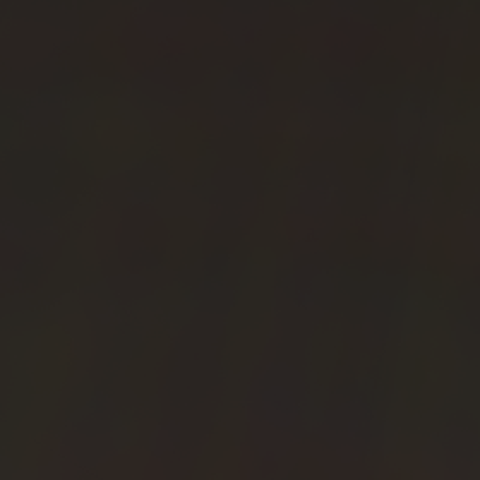
Iteration 15
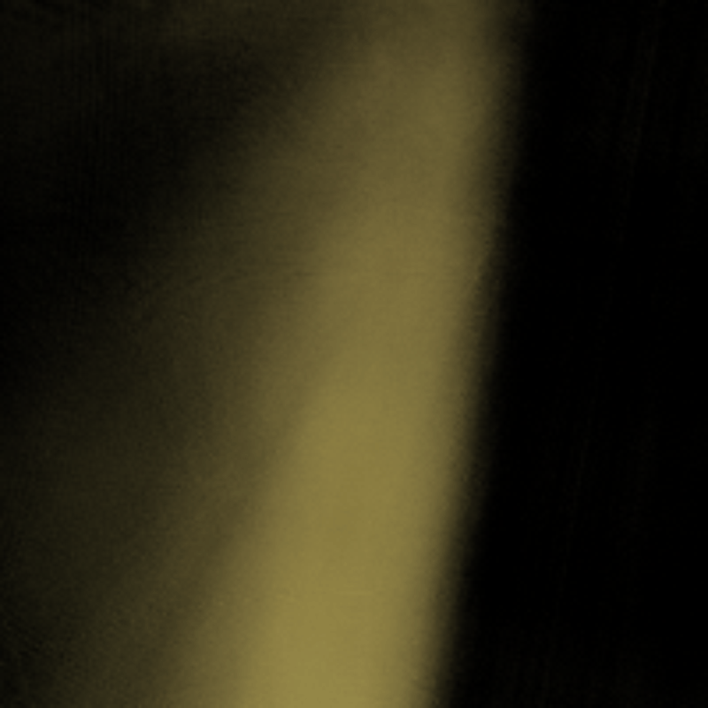
Iteration 63
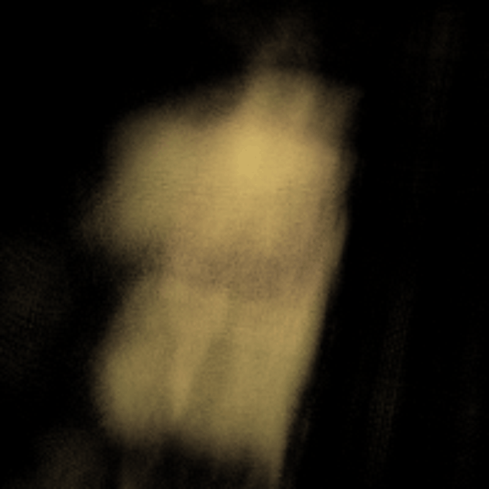
Iteration 100
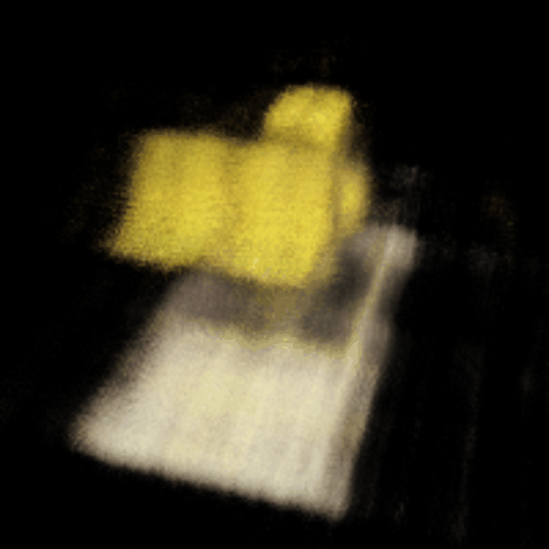
Iteration 251Iteration 1000
Final Lego NeRF Rendering
The fully trained NeRF can render photorealistic novel views from any camera angle:
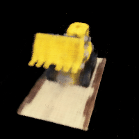
Final Lego NeRF - Novel View Synthesis
PSNR Validation Curve - Lego
PSNR measured on the validation set (10 held-out images) during training. The model achieves >23 dB,
indicating successful reconstruction quality.
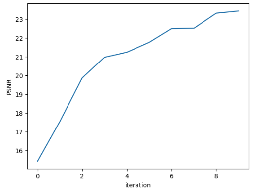
Lego Validation PSNR
Part 2.6: Training with Custom Data - La Croix Can
Using the dataset created in Part 0 (camera calibration and 3D scanning), we trained a NeRF on a custom object:
a La Croix beverage can. This demonstrates the complete pipeline from data capture to 3D reconstruction.
Custom Data Modifications:
Near/Far Bounds: Adjusted from 2.0/6.0 to 0.02/0.7 to match real-world scale
Samples per Ray: Remained at 64 to avoid overfitting
Training Duration: Extended training to 5000 iterations for convergence
Learning Rate: Changed to 5e-4
La Croix Training Progression
The neural field learns the representation of the La Croix can overtime:
Iteration 1Iteration 5
Iteration 30Iteration 165
Iteration 910Iteration 4999
Final La Croix NeRF Rendering
The trained NeRF successfully reconstructs the can with somewhat accurate geometries and colors, however, much improvement is still
needed in order to realize picture perfect results.
Final La Croix NeRF - Novel View Synthesis
Training Metrics - La Croix
Training loss and PSNR curves for the custom object reconstruction:
La Croix Training LossLa Croix Training PSNR
Challenges and Reflection
This part of the project was by far the hardest part. It required multiple retakes of the La Croix can dataset in order to achieve the alright results
above as well as instense hyperparameter tuning in order to get the model to converge. This part of the project easily took over 15 hours to do because
training, hyperparamter tuning, revisting the dataset. However, by finding the right hyperparamters and training the model for much longer, I am extremely
satisfied with the results that I got.
I hope to revist this section on my own time in the future in order to implement the more exotic algorithms that are used in the bells and whistles of the
final project to get more mindblowing results. While a very hard project, I really enjoyed seeing my end result with my own dataset working.